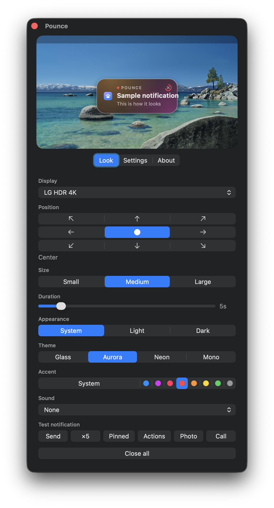

About
Move macOS notifications
Notifications show up where you are actually looking, so you stop missing them.
Install
brew install --cask ojtiger/tap/pounce
Screenshot

FAQ
Can I change the notification position in macOS settings?
You cannot. Apple pins banners to the top right and there is no setting for it. That is why this app exists.
Is a card in the middle of the screen distracting?
It leaves on its own after a few seconds, and it waits while your pointer is on it. If it still gets in the way, move it to the bottom center. There are nine spots.
Does anything leave my Mac?
No. Everything happens on this Mac. The only outgoing request is the check for a new version, and you can turn that off.
Which Macs does it run on?
macOS 14 Sonoma and later, Apple silicon and Intel alike. macOS 26 uses the system glass material, earlier versions frosted glass.